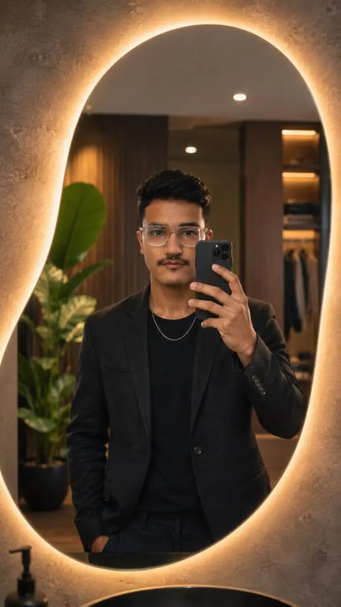
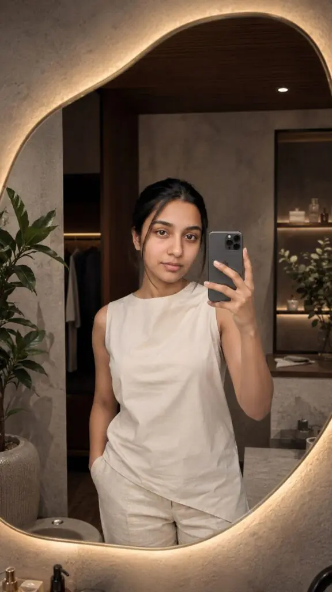
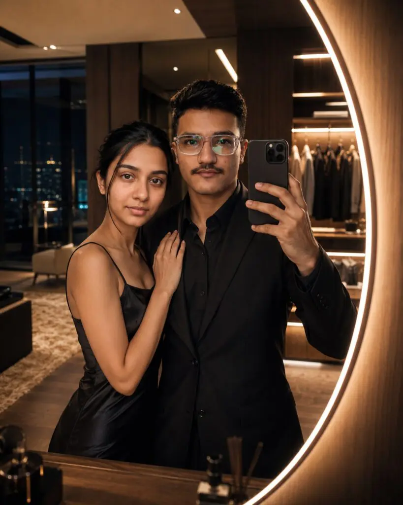

A single well-written prompt can turn an ordinary selfie into a luxury fashion editorial shot. That is exactly why the Mirror Selfie Prompt trend has exploded across social media platforms and AI image communities.
Creators are using viral ChatGPT prompts, Promptseen AI photo editing techniques, and detailed scene descriptions to generate high-end mirror selfies that look professionally photographed. From luxury dressing rooms to influencer-style aesthetics, the right prompt can dramatically improve the final image.
This guide explains how mirror selfie prompts work, what makes them effective, and how to write prompts that produce realistic and visually impressive results.
What Is a Mirror Selfie Prompt?
A Mirror Selfie Prompt is a detailed text instruction used with AI image tools to create or enhance mirror selfie photographs.
Instead of editing each element manually, users describe the environment, lighting, camera settings, outfit, and mood. The AI then generates an image based on those instructions.
Want more awesome prompts?
Join our community and get the latest viral prompts daily.
Follow on Instagram


Why Mirror Selfie Prompts Are Going Viral
The popularity of AI-generated portraits has created huge demand for ready-made prompts.
Users no longer need advanced editing skills to create professional-looking images. Instead, they can use carefully structured prompts and generate results within minutes.
Social Media Influence
Instagram, Pinterest, and short-form video platforms have accelerated the trend.
Creators often share before-and-after transformations that show how a basic selfie can become a luxury lifestyle image through AI editing.
The Appeal of Viral ChatGPT Prompts
Many viral ChatGPT prompts succeed because they combine:
- Realistic photography language
- Interior design descriptions
- Fashion-focused styling
- Camera settings used by professionals
Prompt structure matters as much as creativity when aiming for realistic outputs.
How to Create the Perfect Mirror Selfie Prompt
Writing a successful prompt requires more than adding random descriptive words.
The best prompts follow a logical structure.
Start With the Subject
Describe the person first.
Include details such as:
- Age range
- Hairstyle
- Clothing style
- Facial expression
- Pose
This gives the AI a clear foundation.
Define the Environment
Next, describe the location.
For luxury mirror selfies, users commonly include:
- Contemporary dressing rooms
- Premium bathrooms
- Designer interiors
- Dark wood accents
- Decorative indoor plants
Add Lighting Details
Lighting has a huge impact on realism.
Many successful prompts include:
- Warm ambient lighting
- Soft golden glow
- LED mirror backlighting
- Natural window light
- Soft highlights
Lighting often determines whether an image looks realistic or artificial.
Include Camera Specifications
Professional photography terms help shape the final result.
Examples include:
- 85mm lens
- f/1.8 aperture
- HDR photography
- Cinematic color grading
- Shallow depth of field
These terms frequently appear in high-performing AI prompts.
Best Mirror Selfie Prompt Examples
Below are examples that can be adapted for different styles.
Luxury Dressing Room Style
A fashionable young woman taking a mirror selfie in a luxury contemporary dressing room, large organic-shaped mirror with warm LED backlighting, textured concrete walls, dark wood accents, indoor plants, premium decor, realistic skin details, cinematic color grading, 85mm lens, shallow depth of field, ultra-realistic photography.
Minimalist Lifestyle Style
Young influencer taking a mirror selfie in a minimalist interior, natural daylight, neutral clothing, modern furniture, soft shadows, realistic reflections, editorial fashion photography, high-resolution image.
High-End Fashion Campaign Style
Model posing in front of a designer mirror, luxury wardrobe space, warm ambient lighting, fashion magazine quality, realistic textures, premium styling, professional photography look.
These examples work well as a starting point and can be customized based on personal preferences.
Mirror Selfie Prompt vs Traditional Photo Editing
Many users wonder whether AI prompting is better than traditional editing software.
The answer depends on the goal.
AI Prompting Advantages
AI-generated edits offer speed and convenience.
Benefits include:
- Faster workflow
- No advanced editing skills required
- Easy experimentation
- Consistent visual style
Traditional Editing Advantages
Manual editing still provides more control.
Editors can adjust specific details such as:
- Skin retouching
- Background cleanup
- Color correction
- Object removal
Which Is Better?
For quick transformations and creative concepts, AI prompts often save time.
For commercial photography projects requiring precision, traditional editing may still be the preferred choice.
The best approach often combines both methods.
Common Mistakes to Avoid
Even experienced users sometimes create prompts that produce weak results.
Using Too Many Unrelated Keywords
Adding dozens of unrelated styles can confuse the AI.
Keep descriptions focused and relevant.
Ignoring Lighting Information
Many prompts describe the subject but forget the lighting.
Without clear lighting instructions, images may appear flat or unrealistic.
Overusing Trendy Buzzwords
Not every popular keyword improves image quality.
Choose words that provide actual visual direction rather than copying every viral trend.
Forgetting Realistic Details
Realistic reflections, natural skin texture, and believable shadows often make a bigger difference than excessive effects.
Authenticity usually creates stronger results than extreme editing.
How Promptseen AI Photo Editing Fits In
Promptseen AI photo editing has gained attention because it focuses on ready-made prompt formats that users can adapt quickly.
Instead of building prompts from scratch, users can start with proven structures and personalize them.
Benefits of Promptseen AI Photo Editing
Common advantages include:
- Faster prompt creation
- Consistent formatting
- Easier customization
- Better understanding of prompt structure
What About Promptseen Boy Prompts?
Promptseen Boy prompt formats follow similar principles but focus on male portraits.
These prompts often emphasize:
- Streetwear fashion
- Luxury lifestyle themes
- Fitness aesthetics
- Urban photography environments
The same prompt-writing principles apply regardless of the subject.
FAQ
What is a Mirror Selfie Prompt?
A Mirror Selfie Prompt is a text-based instruction used with AI image generators to create or edit mirror selfie photos. It describes the subject, environment, lighting, and photography style.
How do I make my mirror selfie prompt look realistic?
Focus on realistic lighting, natural skin details, accurate reflections, and professional camera settings. Avoid excessive effects that make the image look artificial.
Why are viral ChatGPT prompts so popular?
They provide structured instructions that help users generate high-quality images quickly. Many people use them as templates and modify them for their own projects.
Can I use a Mirror Selfie Prompt with my existing photo?
Yes. Many AI tools allow users to upload a reference image and apply prompt-based edits while preserving key facial features and overall appearance.
Is Promptseen AI photo editing free?
Availability depends on the platform and service being used. Some tools offer free options, while others require subscriptions or credits.
Which camera settings should I mention in a prompt?
Popular choices include 85mm lens, f/1.8 aperture, HDR photography, and shallow depth of field. These settings are commonly associated with portrait photography.
When should I use detailed prompts instead of short prompts?
Detailed prompts work better when you want specific results. Short prompts may be useful for experimentation but often provide less control.
Does adding more keywords improve image quality?
Not always. Relevant details improve results, but excessive keywords can confuse the AI and reduce consistency.
Conclusion
The best Mirror Selfie Prompt combines realistic subject details, thoughtful lighting, professional photography terms, and a clearly defined environment. When paired with viral ChatGPT prompts and Promptseen AI photo editing techniques, it becomes much easier to create images that resemble professional fashion photography.
Start experimenting with your own Mirror Selfie Prompt today, refine the details with each attempt, and build a prompt library that consistently produces standout results.
You have not enough Humanizer words left. Upgrade your Surfer plan.